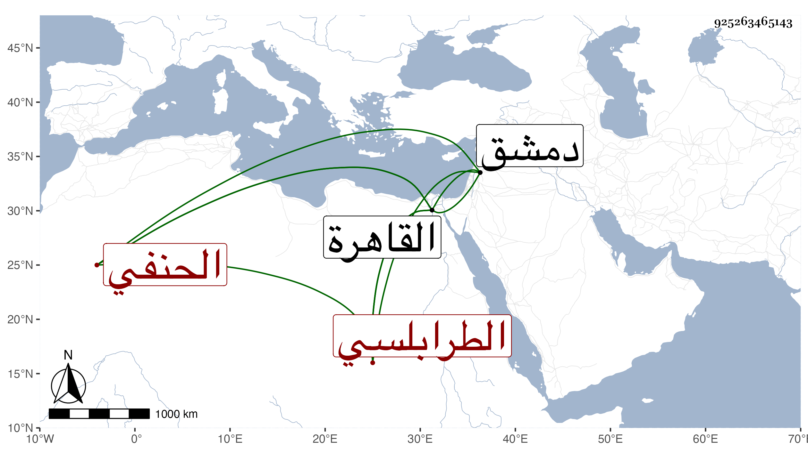

0902Sakhawi.DawLamic.ITO20230111-ara1.EIS1600.925263465143
Biography ID: 925263465143
إبراهيم بن موسى بن أبي بكر بن الشيخ على الطرابلسي الحنفي نزيل المؤيدية من القاهرة أخذ في دمشق عن جماعة منهم الشرف بن عيد وقدم معه القاهرة حين طلب لقضائها ولازم الصلاح الطرابلسي ورغب له عن تصوفه بالمؤيدية لما أعطى مشيخة الأشرفية وعد في النوادر وأخذ عن الديمي شرح ألفية العراقي للناظم وعن السنباطي أشياء وكذا سمع على شرح معاني الآثار والآثار لمحمد بن الحسن وغيرهما وعلق عني بعض التآليف بل سمع على أبي السعود العراقي والرضا الأوجاقي وهو فاضل ساكن دين ممن حضر بعد في أثناء سنة أربع وتسعين بالقبة الدوادارية بين يدي السلطان وعلم بحاله وفضله فأنعم عليه بشيء ثم قرره في الجوالي المصرية عن الكوراني ونعم الصنع .
